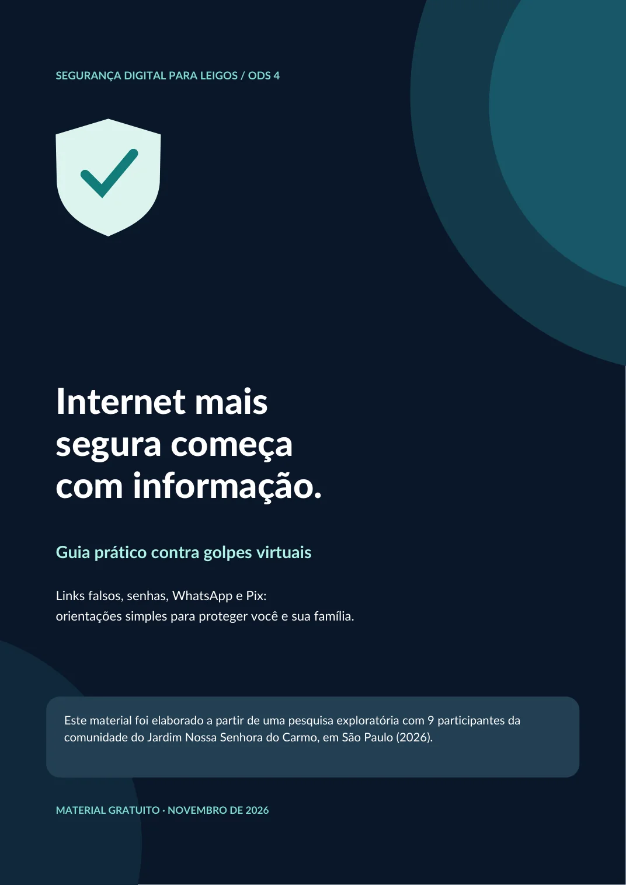

Links e mensagens falsas
Desconfie de mensagens alarmantes, ofertas irresistíveis e pedidos inesperados de dados.
Na dúvida: acesse o aplicativo ou site oficial digitando o endereço você mesmo.
Golpes na internet podem parecer convincentes. Aprenda a identificar os sinais, proteger seus dados e tomar decisões mais seguras — sem complicação.
Pequenos hábitos fazem uma grande diferença. Comece por estes quatro assuntos.
Desconfie de mensagens alarmantes, ofertas irresistíveis e pedidos inesperados de dados.
Crie uma senha longa e diferente para cada serviço, e ative a autenticação em duas etapas.
Uma foto conhecida não garante que a pessoa do outro lado seja quem você imagina.
Confira o nome do destinatário e o valor antes de pagar, e desconfie de pressa para transferir.
A maioria dos golpes tenta fazer você agir no impulso. Retomar o controle começa com alguns segundos de atenção.
Ver checklist de proteçãoNão clique no link nem responda com dados ou códigos.
Procure a instituição ou a pessoa pelos canais oficiais.
Se necessário, troque sua senha e avise o banco imediatamente.
Marque os cuidados que você já pratica. Tudo fica apenas no seu navegador, sem envio de respostas.
Responda a três situações comuns. Não é prova, é treino — e você não precisa informar nenhum dado.

A cartilha reúne os cuidados mais importantes em um PDF leve, feito para ler no celular, guardar e encaminhar a amigos e familiares.
O conteúdo é educativo e não garante proteção absoluta. Em caso de fraude financeira, procure imediatamente seu banco por canais oficiais.
Este projeto de extensão está alinhado ao ODS 4 — Educação de Qualidade e busca tornar informações sobre segurança online mais acessíveis.
Pesquisa de campo voluntária realizada de setembro a outubro de 2026 com pessoas ligadas à comunidade do Jardim Nossa Senhora do Carmo, São Paulo. Amostra pequena e não probabilística: os resultados não representam estatisticamente toda a comunidade.
“Sua cartilha é essencial.
“Clara, objetiva e mostra bem os tipos de golpes mais comuns.
“A inclusão de fotos e ilustrações pode enriquecer o material.
Interrompa o contato, preserve os registros, proteja suas contas e procure canais oficiais. Se houve Pix ou pagamento, fale com sua instituição financeira imediatamente e registre ocorrência quando cabível.